📖 สรุปเนื้อหาเจาะลึกรายสไลด์: 04. Micro3.pdf — วงจรลอจิกแบบลำดับ (Sequential Logic), Flip-Flops & Counters
ถอดสกัดภาพสไลด์และวิเคราะห์เชิงลึก 3 กรอบ [📌 อะไร (What), ❓ ทำไม (Why), ⚙️ ยังไง (How)] ครบถ้วนทั้ง 22 หน้า สรุปใจความสำคัญประจำสไลด์ และผังวงจรจำลอง SVG Interactive Animated Diagram
📁 ตำแหน่งไฟล์อ้างอิงต้นฉบับใน Workspace (Source File Mapping)
- Source PDF Lectures_and_Textbooks/Micro3.pdf (ไฟล์อ้างอิงต้นฉบับเฉพาะไฟล์ Micro3.pdf รวม 22 สไลด์/หน้า)
สไลด์ที่ 1 จาก 22
Slide #1
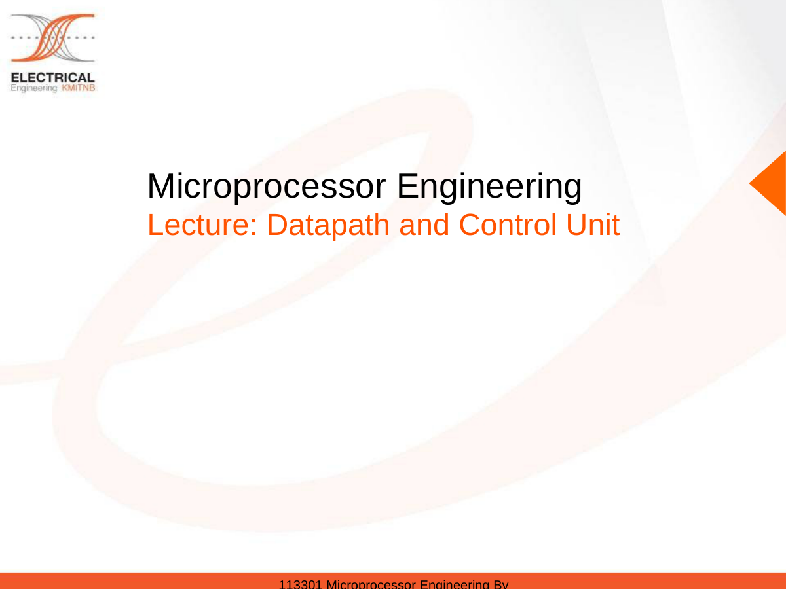
📌 อะไร (What):
สไลด์ที่ 1: สาระสำคัญเรื่อง 04. Micro3.pdf — วงจรลอจิกแบบลำดับ (Sequential Logic), Flip-Flops & Counters (เนื้อหาหลัก: 113301 Microprocessor Engineering By Microprocessor Engineering Lecture: Datapath and Control Unit)
❓ ทำไม (Why):
การเข้าใจเนื้อหาในสไลด์ที่ 1 ของไฟล์ Micro3.pdf มีความสำคัญอย่างยิ่งในการสอบวิชา Embedded System เพื่อวิเคราะห์สถาปัตยกรรมและนำไปใช้ออกแบบฮาร์ดแวร์/เฟิร์มแวร์จริง
⚙️ ยังไง (How):
การทำงานในสไลด์ที่ 1 ประมวลผลผ่านสัญญาณดิจิทัล สัญญาณนาฬิกา (Clock) และโครงสร้างรีจิสเตอร์/บัสภายในระบบอย่างเป็นลำดับขั้นตอน
สไลด์ที่ 2 จาก 22
Slide #2
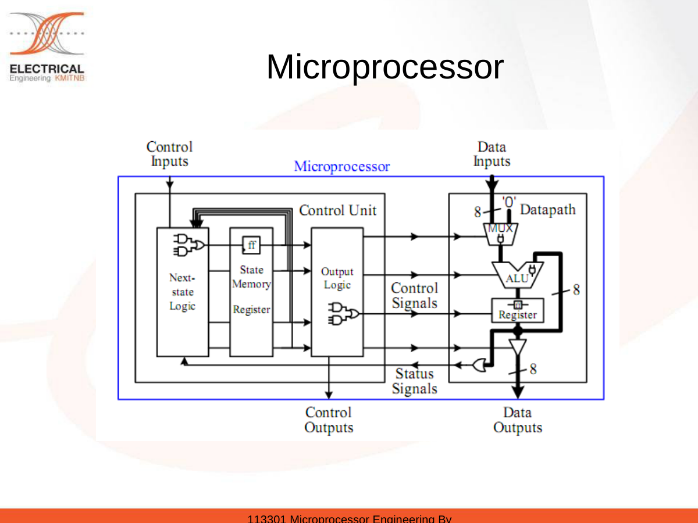
📌 อะไร (What):
สไลด์ที่ 2: สาระสำคัญเรื่อง 04. Micro3.pdf — วงจรลอจิกแบบลำดับ (Sequential Logic), Flip-Flops & Counters (เนื้อหาหลัก: 113301 Microprocessor Engineering By Microprocessor)
❓ ทำไม (Why):
การเข้าใจเนื้อหาในสไลด์ที่ 2 ของไฟล์ Micro3.pdf มีความสำคัญอย่างยิ่งในการสอบวิชา Embedded System เพื่อวิเคราะห์สถาปัตยกรรมและนำไปใช้ออกแบบฮาร์ดแวร์/เฟิร์มแวร์จริง
⚙️ ยังไง (How):
การทำงานในสไลด์ที่ 2 ประมวลผลผ่านสัญญาณดิจิทัล สัญญาณนาฬิกา (Clock) และโครงสร้างรีจิสเตอร์/บัสภายในระบบอย่างเป็นลำดับขั้นตอน
💡 เฉลยคำตอบประเด็นประจำสไลด์ (Slide Question Answer):
คำตอบสำหรับประเด็นในสไลด์ที่ 2: การวิเคราะห์มโนทัศน์และข้อกำหนดเชิงวิศวกรรมของหัวข้อนี้ ช่วยให้เข้าใจหลักการทำงานและแก้โจทย์คำนวณในข้อสอบได้อย่างถูกต้อง
สไลด์ที่ 3 จาก 22
Slide #3
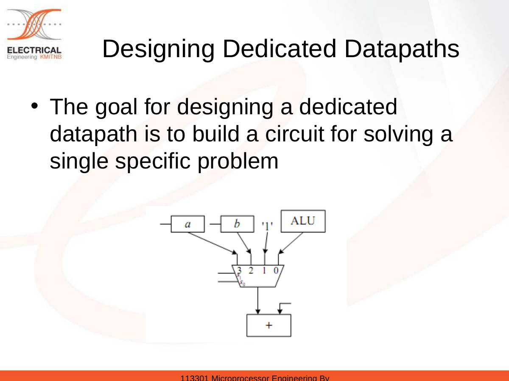
📌 อะไร (What):
สไลด์ที่ 3: สาระสำคัญเรื่อง 04. Micro3.pdf — วงจรลอจิกแบบลำดับ (Sequential Logic), Flip-Flops & Counters (เนื้อหาหลัก: 113301 Microprocessor Engineering By Designing Dedicated Datapaths • The goal for designing a dedicated datapath is to build a circuit for solving a ...)
❓ ทำไม (Why):
การเข้าใจเนื้อหาในสไลด์ที่ 3 ของไฟล์ Micro3.pdf มีความสำคัญอย่างยิ่งในการสอบวิชา Embedded System เพื่อวิเคราะห์สถาปัตยกรรมและนำไปใช้ออกแบบฮาร์ดแวร์/เฟิร์มแวร์จริง
⚙️ ยังไง (How):
การทำงานในสไลด์ที่ 3 ประมวลผลผ่านสัญญาณดิจิทัล สัญญาณนาฬิกา (Clock) และโครงสร้างรีจิสเตอร์/บัสภายในระบบอย่างเป็นลำดับขั้นตอน
สไลด์ที่ 4 จาก 22
Slide #4
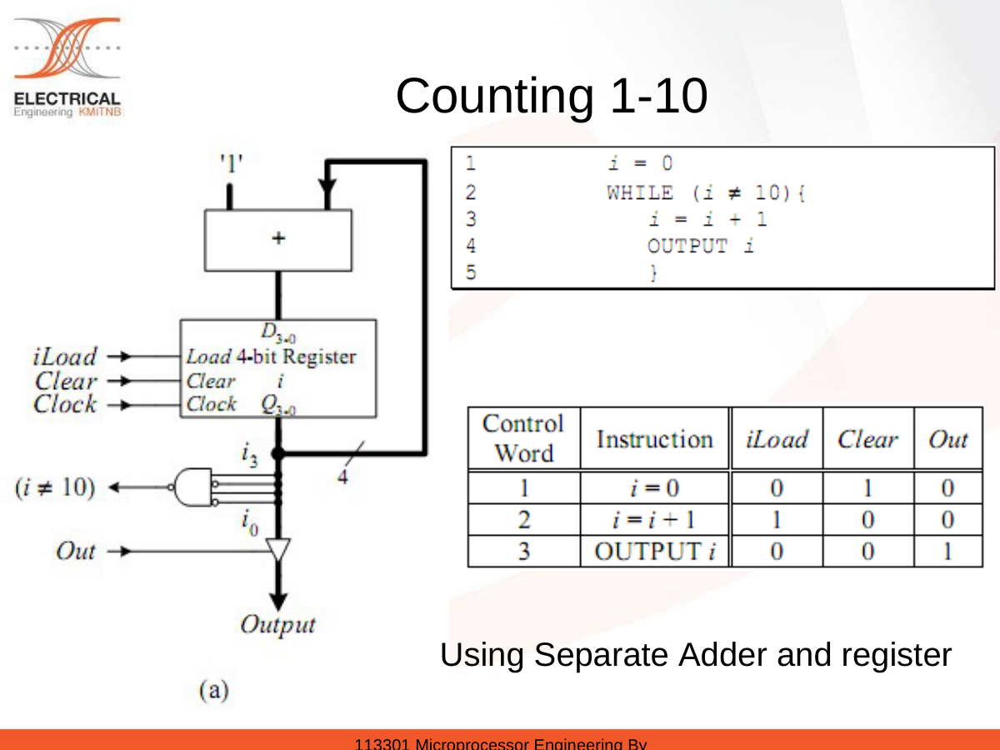
📌 อะไร (What):
สไลด์ที่ 4: สาระสำคัญเรื่อง 04. Micro3.pdf — วงจรลอจิกแบบลำดับ (Sequential Logic), Flip-Flops & Counters (เนื้อหาหลัก: 113301 Microprocessor Engineering By Counting 1-10 Using Separate Adder and register)
❓ ทำไม (Why):
การเข้าใจเนื้อหาในสไลด์ที่ 4 ของไฟล์ Micro3.pdf มีความสำคัญอย่างยิ่งในการสอบวิชา Embedded System เพื่อวิเคราะห์สถาปัตยกรรมและนำไปใช้ออกแบบฮาร์ดแวร์/เฟิร์มแวร์จริง
⚙️ ยังไง (How):
การทำงานในสไลด์ที่ 4 ประมวลผลผ่านสัญญาณดิจิทัล สัญญาณนาฬิกา (Clock) และโครงสร้างรีจิสเตอร์/บัสภายในระบบอย่างเป็นลำดับขั้นตอน
สไลด์ที่ 5 จาก 22
Slide #5
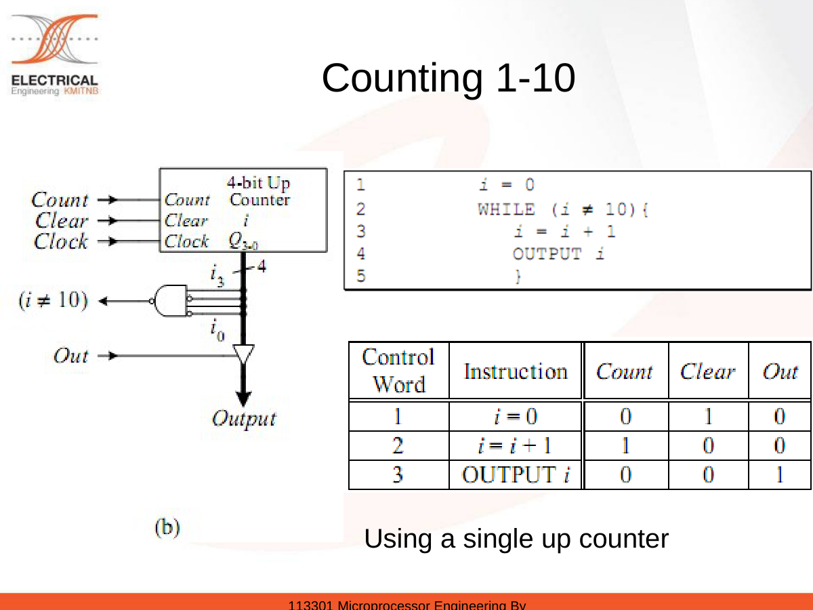
📌 อะไร (What):
สไลด์ที่ 5: สาระสำคัญเรื่อง 04. Micro3.pdf — วงจรลอจิกแบบลำดับ (Sequential Logic), Flip-Flops & Counters (เนื้อหาหลัก: 113301 Microprocessor Engineering By Counting 1-10 Using a single up counter)
❓ ทำไม (Why):
การเข้าใจเนื้อหาในสไลด์ที่ 5 ของไฟล์ Micro3.pdf มีความสำคัญอย่างยิ่งในการสอบวิชา Embedded System เพื่อวิเคราะห์สถาปัตยกรรมและนำไปใช้ออกแบบฮาร์ดแวร์/เฟิร์มแวร์จริง
⚙️ ยังไง (How):
การทำงานในสไลด์ที่ 5 ประมวลผลผ่านสัญญาณดิจิทัล สัญญาณนาฬิกา (Clock) และโครงสร้างรีจิสเตอร์/บัสภายในระบบอย่างเป็นลำดับขั้นตอน
💡 เฉลยคำตอบประเด็นประจำสไลด์ (Slide Question Answer):
คำตอบสำหรับประเด็นในสไลด์ที่ 5: การวิเคราะห์มโนทัศน์และข้อกำหนดเชิงวิศวกรรมของหัวข้อนี้ ช่วยให้เข้าใจหลักการทำงานและแก้โจทย์คำนวณในข้อสอบได้อย่างถูกต้อง
🔌 ผังจำลองการไหลของข้อมูลฮาร์ดแวร์สไลด์ที่ 5 (SVG Interactive Animation)
สไลด์ที่ 6 จาก 22
Slide #6
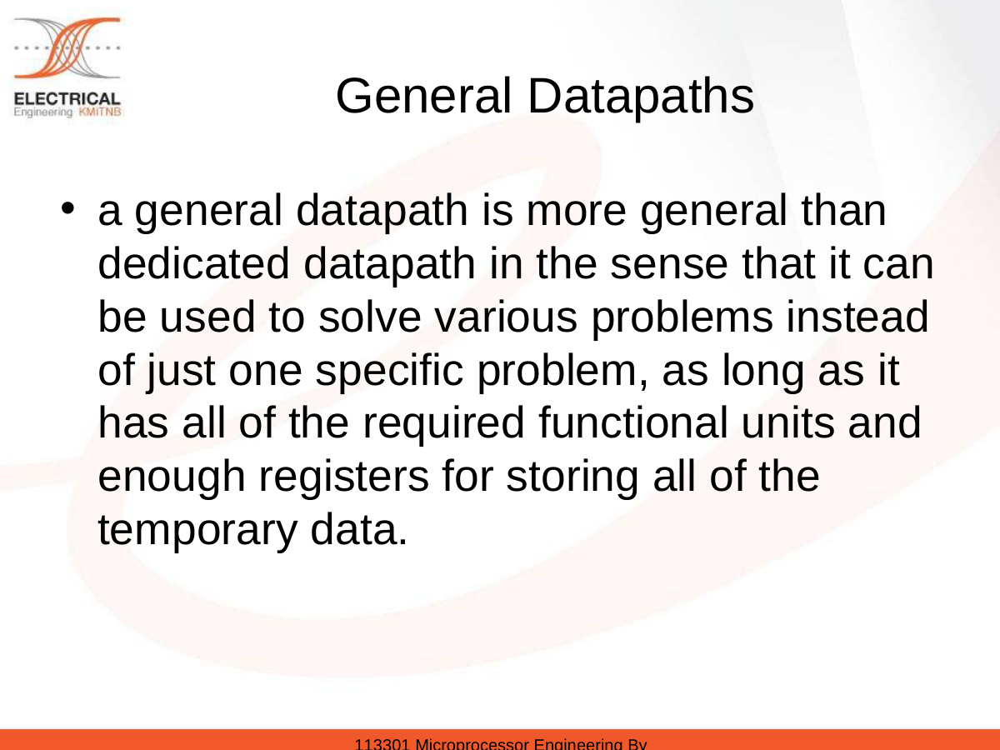
📌 อะไร (What):
สไลด์ที่ 6: สาระสำคัญเรื่อง 04. Micro3.pdf — วงจรลอจิกแบบลำดับ (Sequential Logic), Flip-Flops & Counters (เนื้อหาหลัก: 113301 Microprocessor Engineering By General Datapaths • a general datapath is more general than dedicated datapath in the sense that it can be use...)
❓ ทำไม (Why):
การเข้าใจเนื้อหาในสไลด์ที่ 6 ของไฟล์ Micro3.pdf มีความสำคัญอย่างยิ่งในการสอบวิชา Embedded System เพื่อวิเคราะห์สถาปัตยกรรมและนำไปใช้ออกแบบฮาร์ดแวร์/เฟิร์มแวร์จริง
⚙️ ยังไง (How):
การทำงานในสไลด์ที่ 6 ประมวลผลผ่านสัญญาณดิจิทัล สัญญาณนาฬิกา (Clock) และโครงสร้างรีจิสเตอร์/บัสภายในระบบอย่างเป็นลำดับขั้นตอน
สไลด์ที่ 7 จาก 22
Slide #7
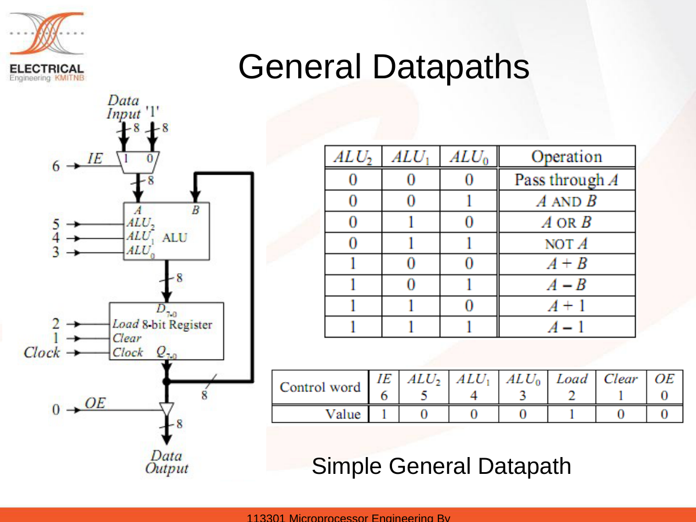
📌 อะไร (What):
สไลด์ที่ 7: สาระสำคัญเรื่อง 04. Micro3.pdf — วงจรลอจิกแบบลำดับ (Sequential Logic), Flip-Flops & Counters (เนื้อหาหลัก: 113301 Microprocessor Engineering By General Datapaths Simple General Datapath)
❓ ทำไม (Why):
การเข้าใจเนื้อหาในสไลด์ที่ 7 ของไฟล์ Micro3.pdf มีความสำคัญอย่างยิ่งในการสอบวิชา Embedded System เพื่อวิเคราะห์สถาปัตยกรรมและนำไปใช้ออกแบบฮาร์ดแวร์/เฟิร์มแวร์จริง
⚙️ ยังไง (How):
การทำงานในสไลด์ที่ 7 ประมวลผลผ่านสัญญาณดิจิทัล สัญญาณนาฬิกา (Clock) และโครงสร้างรีจิสเตอร์/บัสภายในระบบอย่างเป็นลำดับขั้นตอน
สไลด์ที่ 8 จาก 22
Slide #8
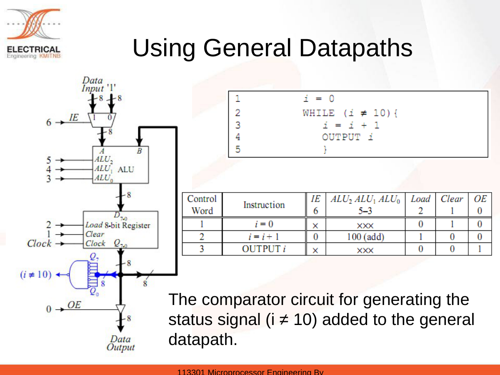
📌 อะไร (What):
สไลด์ที่ 8: สาระสำคัญเรื่อง 04. Micro3.pdf — วงจรลอจิกแบบลำดับ (Sequential Logic), Flip-Flops & Counters (เนื้อหาหลัก: 113301 Microprocessor Engineering By Using General Datapaths The comparator circuit for generating the status signal (i ≠ 10) added to the general ...)
❓ ทำไม (Why):
การเข้าใจเนื้อหาในสไลด์ที่ 8 ของไฟล์ Micro3.pdf มีความสำคัญอย่างยิ่งในการสอบวิชา Embedded System เพื่อวิเคราะห์สถาปัตยกรรมและนำไปใช้ออกแบบฮาร์ดแวร์/เฟิร์มแวร์จริง
⚙️ ยังไง (How):
การทำงานในสไลด์ที่ 8 ประมวลผลผ่านสัญญาณดิจิทัล สัญญาณนาฬิกา (Clock) และโครงสร้างรีจิสเตอร์/บัสภายในระบบอย่างเป็นลำดับขั้นตอน
สไลด์ที่ 9 จาก 22
Slide #9
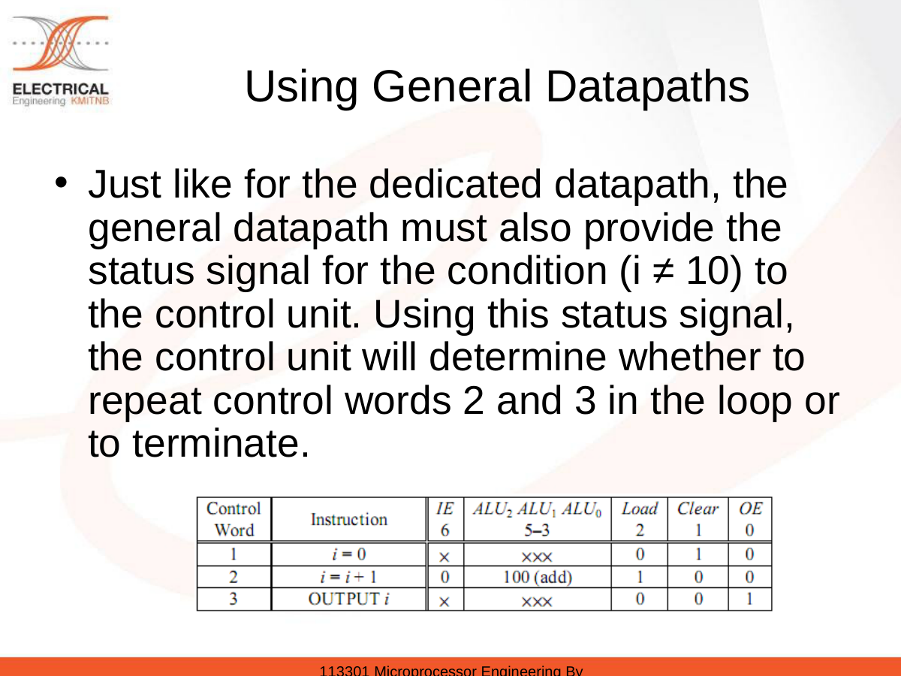
📌 อะไร (What):
สไลด์ที่ 9: สาระสำคัญเรื่อง 04. Micro3.pdf — วงจรลอจิกแบบลำดับ (Sequential Logic), Flip-Flops & Counters (เนื้อหาหลัก: 113301 Microprocessor Engineering By Using General Datapaths • Just like for the dedicated datapath, the general datapath must also provide the stat...)
❓ ทำไม (Why):
การเข้าใจเนื้อหาในสไลด์ที่ 9 ของไฟล์ Micro3.pdf มีความสำคัญอย่างยิ่งในการสอบวิชา Embedded System เพื่อวิเคราะห์สถาปัตยกรรมและนำไปใช้ออกแบบฮาร์ดแวร์/เฟิร์มแวร์จริง
⚙️ ยังไง (How):
การทำงานในสไลด์ที่ 9 ประมวลผลผ่านสัญญาณดิจิทัล สัญญาณนาฬิกา (Clock) และโครงสร้างรีจิสเตอร์/บัสภายในระบบอย่างเป็นลำดับขั้นตอน
สไลด์ที่ 10 จาก 22
Slide #10
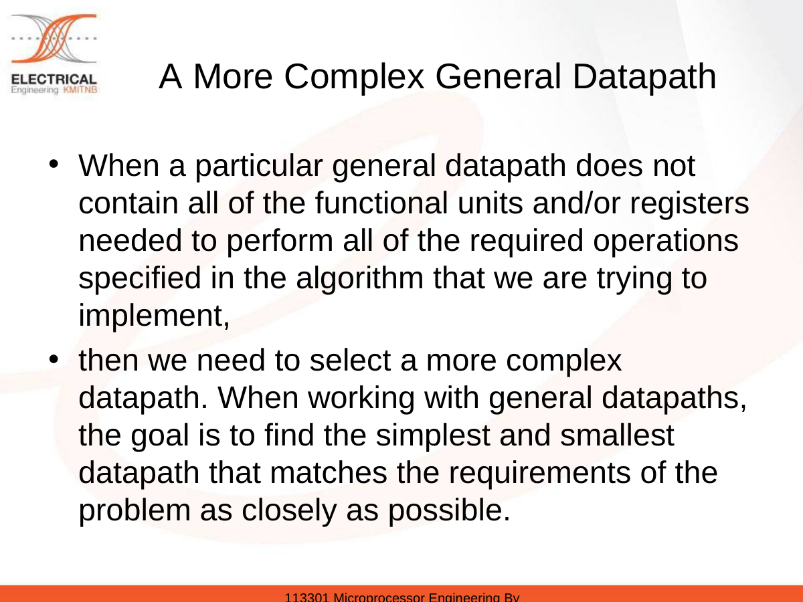
📌 อะไร (What):
สไลด์ที่ 10: สาระสำคัญเรื่อง 04. Micro3.pdf — วงจรลอจิกแบบลำดับ (Sequential Logic), Flip-Flops & Counters (เนื้อหาหลัก: 113301 Microprocessor Engineering By A More Complex General Datapath • When a particular general datapath does not contain all of the functional uni...)
❓ ทำไม (Why):
การเข้าใจเนื้อหาในสไลด์ที่ 10 ของไฟล์ Micro3.pdf มีความสำคัญอย่างยิ่งในการสอบวิชา Embedded System เพื่อวิเคราะห์สถาปัตยกรรมและนำไปใช้ออกแบบฮาร์ดแวร์/เฟิร์มแวร์จริง
⚙️ ยังไง (How):
การทำงานในสไลด์ที่ 10 ประมวลผลผ่านสัญญาณดิจิทัล สัญญาณนาฬิกา (Clock) และโครงสร้างรีจิสเตอร์/บัสภายในระบบอย่างเป็นลำดับขั้นตอน
💡 เฉลยคำตอบประเด็นประจำสไลด์ (Slide Question Answer):
คำตอบสำหรับประเด็นในสไลด์ที่ 10: การวิเคราะห์มโนทัศน์และข้อกำหนดเชิงวิศวกรรมของหัวข้อนี้ ช่วยให้เข้าใจหลักการทำงานและแก้โจทย์คำนวณในข้อสอบได้อย่างถูกต้อง
สไลด์ที่ 11 จาก 22
Slide #11
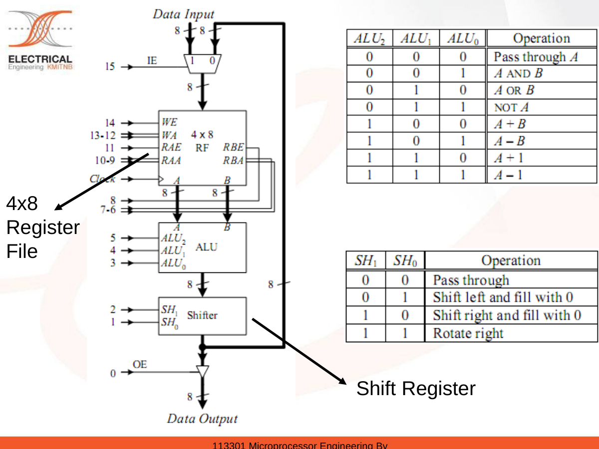
📌 อะไร (What):
สไลด์ที่ 11: สาระสำคัญเรื่อง 04. Micro3.pdf — วงจรลอจิกแบบลำดับ (Sequential Logic), Flip-Flops & Counters (เนื้อหาหลัก: 113301 Microprocessor Engineering By 4x8 Register File Shift Register)
❓ ทำไม (Why):
การเข้าใจเนื้อหาในสไลด์ที่ 11 ของไฟล์ Micro3.pdf มีความสำคัญอย่างยิ่งในการสอบวิชา Embedded System เพื่อวิเคราะห์สถาปัตยกรรมและนำไปใช้ออกแบบฮาร์ดแวร์/เฟิร์มแวร์จริง
⚙️ ยังไง (How):
การทำงานในสไลด์ที่ 11 ประมวลผลผ่านสัญญาณดิจิทัล สัญญาณนาฬิกา (Clock) และโครงสร้างรีจิสเตอร์/บัสภายในระบบอย่างเป็นลำดับขั้นตอน
สไลด์ที่ 12 จาก 22
Slide #12
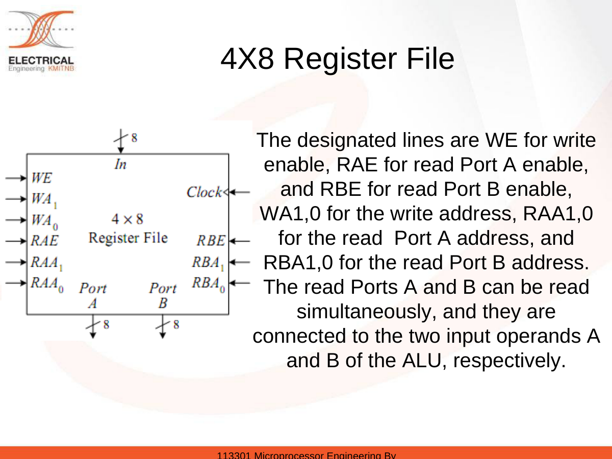
📌 อะไร (What):
สไลด์ที่ 12: สาระสำคัญเรื่อง 04. Micro3.pdf — วงจรลอจิกแบบลำดับ (Sequential Logic), Flip-Flops & Counters (เนื้อหาหลัก: 113301 Microprocessor Engineering By 4X8 Register File The designated lines are WE for write enable, RAE for read Port A enable, and RBE for read Po...)
❓ ทำไม (Why):
การเข้าใจเนื้อหาในสไลด์ที่ 12 ของไฟล์ Micro3.pdf มีความสำคัญอย่างยิ่งในการสอบวิชา Embedded System เพื่อวิเคราะห์สถาปัตยกรรมและนำไปใช้ออกแบบฮาร์ดแวร์/เฟิร์มแวร์จริง
⚙️ ยังไง (How):
การทำงานในสไลด์ที่ 12 ประมวลผลผ่านสัญญาณดิจิทัล สัญญาณนาฬิกา (Clock) และโครงสร้างรีจิสเตอร์/บัสภายในระบบอย่างเป็นลำดับขั้นตอน
สไลด์ที่ 13 จาก 22
Slide #13
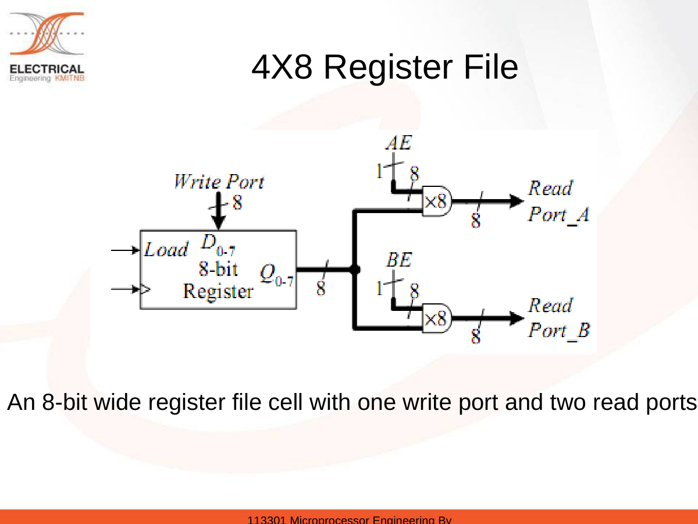
📌 อะไร (What):
สไลด์ที่ 13: สาระสำคัญเรื่อง 04. Micro3.pdf — วงจรลอจิกแบบลำดับ (Sequential Logic), Flip-Flops & Counters (เนื้อหาหลัก: 113301 Microprocessor Engineering By 4X8 Register File An 8-bit wide register file cell with one write port and two read ports)
❓ ทำไม (Why):
การเข้าใจเนื้อหาในสไลด์ที่ 13 ของไฟล์ Micro3.pdf มีความสำคัญอย่างยิ่งในการสอบวิชา Embedded System เพื่อวิเคราะห์สถาปัตยกรรมและนำไปใช้ออกแบบฮาร์ดแวร์/เฟิร์มแวร์จริง
⚙️ ยังไง (How):
การทำงานในสไลด์ที่ 13 ประมวลผลผ่านสัญญาณดิจิทัล สัญญาณนาฬิกา (Clock) และโครงสร้างรีจิสเตอร์/บัสภายในระบบอย่างเป็นลำดับขั้นตอน
สไลด์ที่ 14 จาก 22
Slide #14
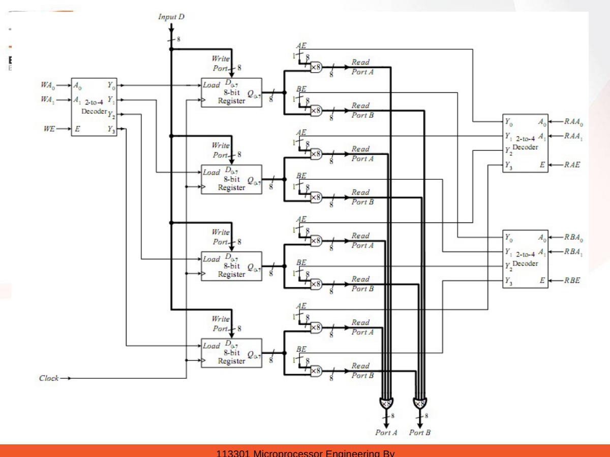
📌 อะไร (What):
สไลด์ที่ 14: สาระสำคัญเรื่อง 04. Micro3.pdf — วงจรลอจิกแบบลำดับ (Sequential Logic), Flip-Flops & Counters (เนื้อหาหลัก: 113301 Microprocessor Engineering By)
❓ ทำไม (Why):
การเข้าใจเนื้อหาในสไลด์ที่ 14 ของไฟล์ Micro3.pdf มีความสำคัญอย่างยิ่งในการสอบวิชา Embedded System เพื่อวิเคราะห์สถาปัตยกรรมและนำไปใช้ออกแบบฮาร์ดแวร์/เฟิร์มแวร์จริง
⚙️ ยังไง (How):
การทำงานในสไลด์ที่ 14 ประมวลผลผ่านสัญญาณดิจิทัล สัญญาณนาฬิกา (Clock) และโครงสร้างรีจิสเตอร์/บัสภายในระบบอย่างเป็นลำดับขั้นตอน
สไลด์ที่ 15 จาก 22
Slide #15
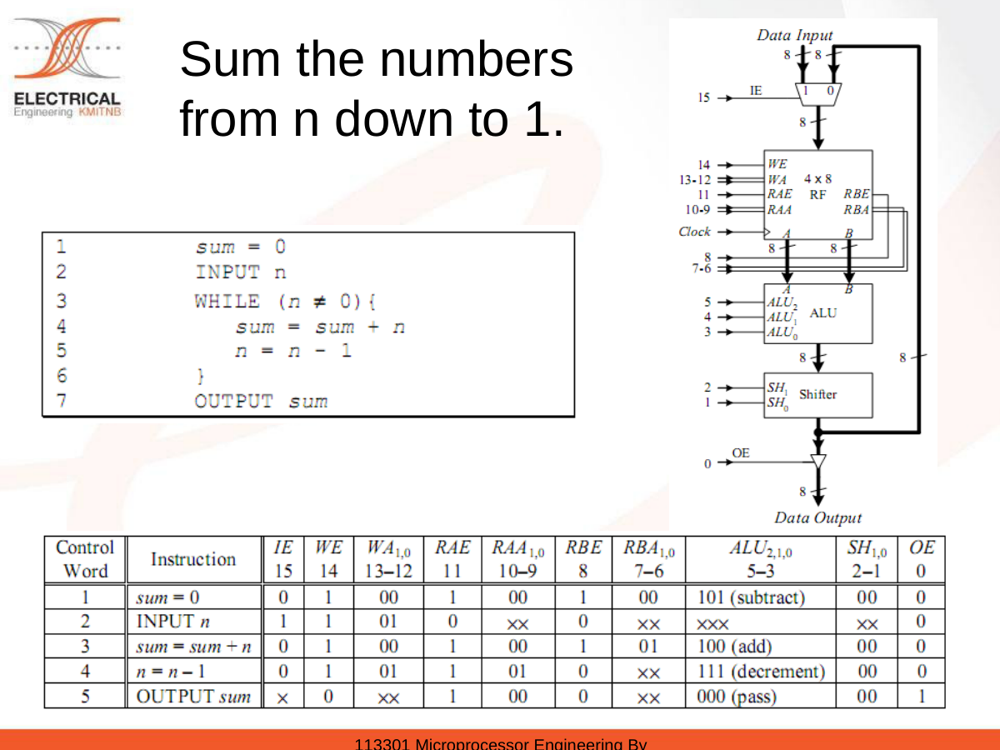
📌 อะไร (What):
สไลด์ที่ 15: สาระสำคัญเรื่อง 04. Micro3.pdf — วงจรลอจิกแบบลำดับ (Sequential Logic), Flip-Flops & Counters (เนื้อหาหลัก: 113301 Microprocessor Engineering By Sum the numbers from n down to 1.)
❓ ทำไม (Why):
การเข้าใจเนื้อหาในสไลด์ที่ 15 ของไฟล์ Micro3.pdf มีความสำคัญอย่างยิ่งในการสอบวิชา Embedded System เพื่อวิเคราะห์สถาปัตยกรรมและนำไปใช้ออกแบบฮาร์ดแวร์/เฟิร์มแวร์จริง
⚙️ ยังไง (How):
การทำงานในสไลด์ที่ 15 ประมวลผลผ่านสัญญาณดิจิทัล สัญญาณนาฬิกา (Clock) และโครงสร้างรีจิสเตอร์/บัสภายในระบบอย่างเป็นลำดับขั้นตอน
💡 เฉลยคำตอบประเด็นประจำสไลด์ (Slide Question Answer):
คำตอบสำหรับประเด็นในสไลด์ที่ 15: การวิเคราะห์มโนทัศน์และข้อกำหนดเชิงวิศวกรรมของหัวข้อนี้ ช่วยให้เข้าใจหลักการทำงานและแก้โจทย์คำนวณในข้อสอบได้อย่างถูกต้อง
🔌 ผังจำลองการไหลของข้อมูลฮาร์ดแวร์สไลด์ที่ 15 (SVG Interactive Animation)
สไลด์ที่ 16 จาก 22
Slide #16
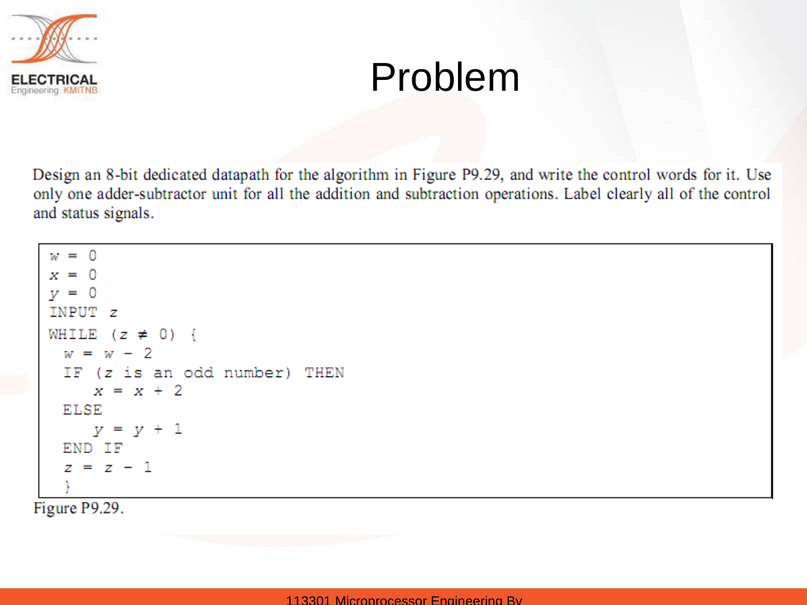
📌 อะไร (What):
สไลด์ที่ 16: สาระสำคัญเรื่อง 04. Micro3.pdf — วงจรลอจิกแบบลำดับ (Sequential Logic), Flip-Flops & Counters (เนื้อหาหลัก: 113301 Microprocessor Engineering By Problem)
❓ ทำไม (Why):
การเข้าใจเนื้อหาในสไลด์ที่ 16 ของไฟล์ Micro3.pdf มีความสำคัญอย่างยิ่งในการสอบวิชา Embedded System เพื่อวิเคราะห์สถาปัตยกรรมและนำไปใช้ออกแบบฮาร์ดแวร์/เฟิร์มแวร์จริง
⚙️ ยังไง (How):
การทำงานในสไลด์ที่ 16 ประมวลผลผ่านสัญญาณดิจิทัล สัญญาณนาฬิกา (Clock) และโครงสร้างรีจิสเตอร์/บัสภายในระบบอย่างเป็นลำดับขั้นตอน
สไลด์ที่ 17 จาก 22
Slide #17
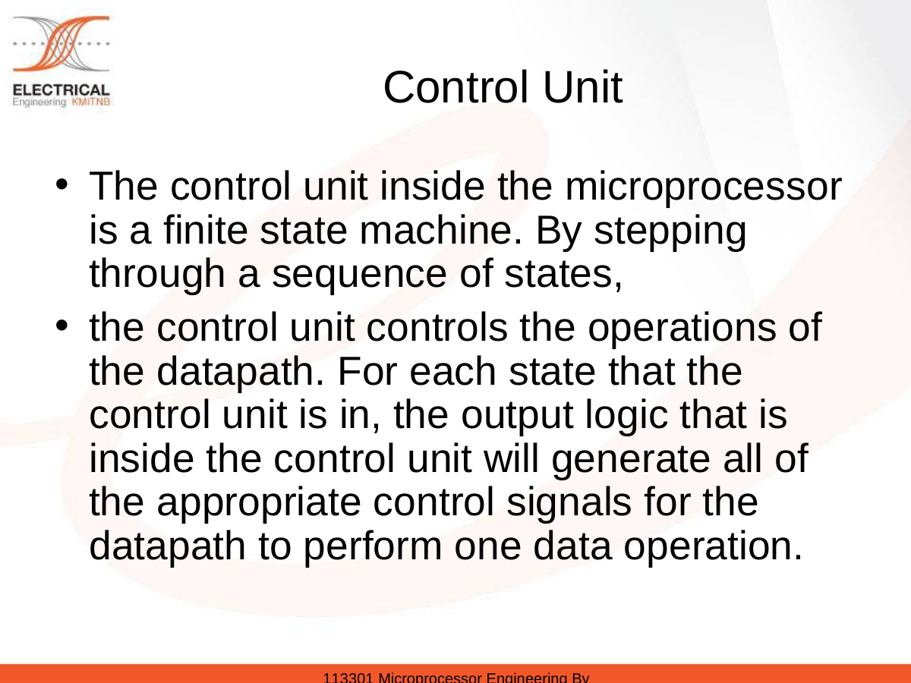
📌 อะไร (What):
สไลด์ที่ 17: สาระสำคัญเรื่อง 04. Micro3.pdf — วงจรลอจิกแบบลำดับ (Sequential Logic), Flip-Flops & Counters (เนื้อหาหลัก: 113301 Microprocessor Engineering By Control Unit • The control unit inside the microprocessor is a finite state machine. By stepping through a sequ...)
❓ ทำไม (Why):
การเข้าใจเนื้อหาในสไลด์ที่ 17 ของไฟล์ Micro3.pdf มีความสำคัญอย่างยิ่งในการสอบวิชา Embedded System เพื่อวิเคราะห์สถาปัตยกรรมและนำไปใช้ออกแบบฮาร์ดแวร์/เฟิร์มแวร์จริง
⚙️ ยังไง (How):
การทำงานในสไลด์ที่ 17 ประมวลผลผ่านสัญญาณดิจิทัล สัญญาณนาฬิกา (Clock) และโครงสร้างรีจิสเตอร์/บัสภายในระบบอย่างเป็นลำดับขั้นตอน
สไลด์ที่ 18 จาก 22
Slide #18
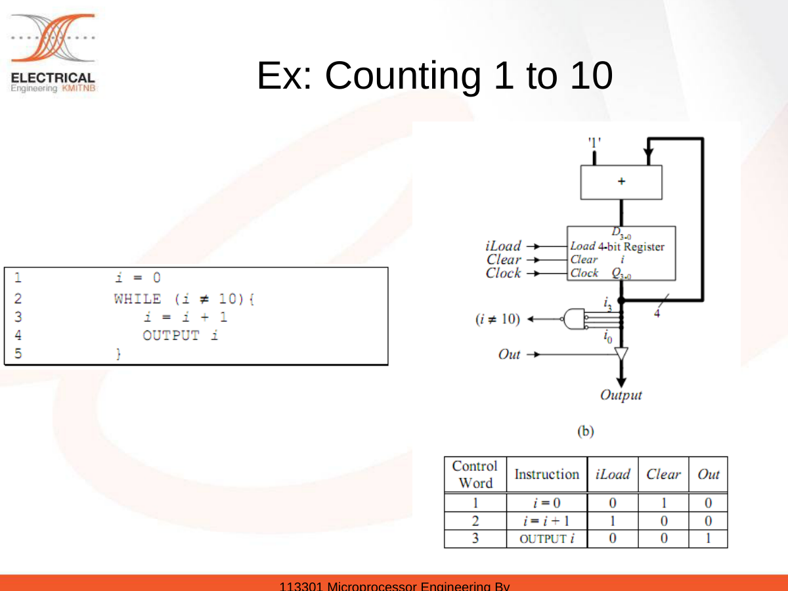
📌 อะไร (What):
สไลด์ที่ 18: สาระสำคัญเรื่อง 04. Micro3.pdf — วงจรลอจิกแบบลำดับ (Sequential Logic), Flip-Flops & Counters (เนื้อหาหลัก: 113301 Microprocessor Engineering By Ex: Counting 1 to 10)
❓ ทำไม (Why):
การเข้าใจเนื้อหาในสไลด์ที่ 18 ของไฟล์ Micro3.pdf มีความสำคัญอย่างยิ่งในการสอบวิชา Embedded System เพื่อวิเคราะห์สถาปัตยกรรมและนำไปใช้ออกแบบฮาร์ดแวร์/เฟิร์มแวร์จริง
⚙️ ยังไง (How):
การทำงานในสไลด์ที่ 18 ประมวลผลผ่านสัญญาณดิจิทัล สัญญาณนาฬิกา (Clock) และโครงสร้างรีจิสเตอร์/บัสภายในระบบอย่างเป็นลำดับขั้นตอน
สไลด์ที่ 19 จาก 22
Slide #19
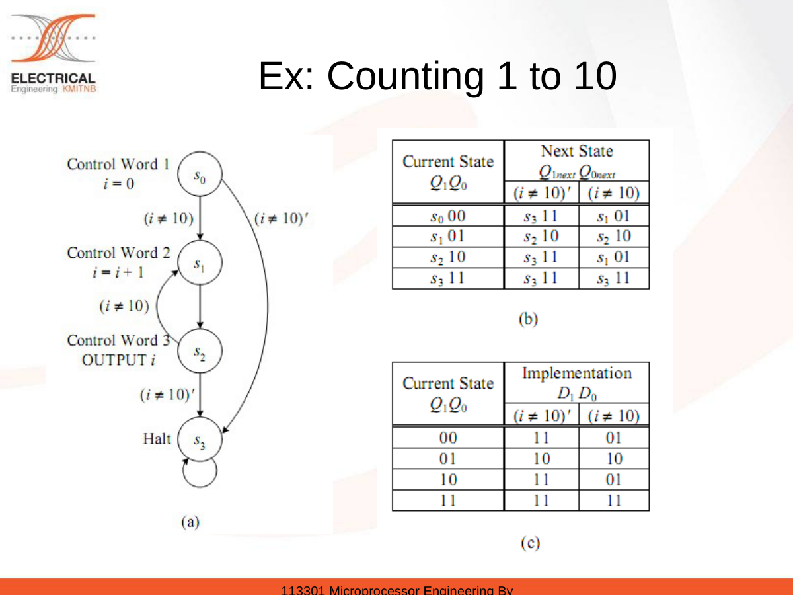
📌 อะไร (What):
สไลด์ที่ 19: สาระสำคัญเรื่อง 04. Micro3.pdf — วงจรลอจิกแบบลำดับ (Sequential Logic), Flip-Flops & Counters (เนื้อหาหลัก: 113301 Microprocessor Engineering By Ex: Counting 1 to 10)
❓ ทำไม (Why):
การเข้าใจเนื้อหาในสไลด์ที่ 19 ของไฟล์ Micro3.pdf มีความสำคัญอย่างยิ่งในการสอบวิชา Embedded System เพื่อวิเคราะห์สถาปัตยกรรมและนำไปใช้ออกแบบฮาร์ดแวร์/เฟิร์มแวร์จริง
⚙️ ยังไง (How):
การทำงานในสไลด์ที่ 19 ประมวลผลผ่านสัญญาณดิจิทัล สัญญาณนาฬิกา (Clock) และโครงสร้างรีจิสเตอร์/บัสภายในระบบอย่างเป็นลำดับขั้นตอน
สไลด์ที่ 20 จาก 22
Slide #20
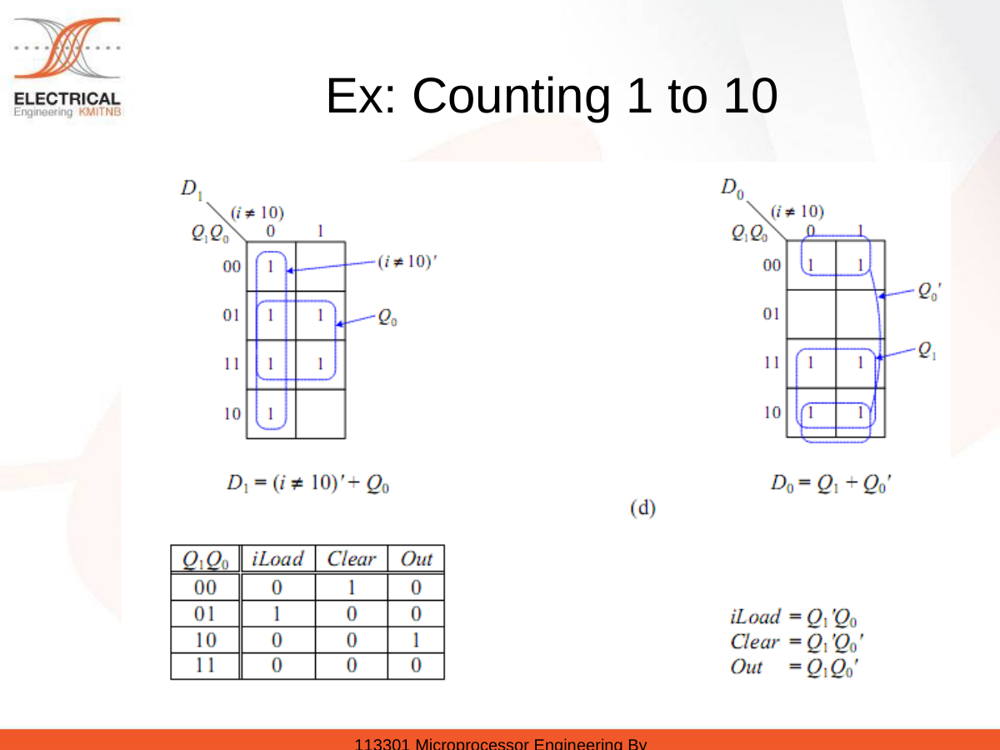
📌 อะไร (What):
สไลด์ที่ 20: สาระสำคัญเรื่อง 04. Micro3.pdf — วงจรลอจิกแบบลำดับ (Sequential Logic), Flip-Flops & Counters (เนื้อหาหลัก: 113301 Microprocessor Engineering By Ex: Counting 1 to 10)
❓ ทำไม (Why):
การเข้าใจเนื้อหาในสไลด์ที่ 20 ของไฟล์ Micro3.pdf มีความสำคัญอย่างยิ่งในการสอบวิชา Embedded System เพื่อวิเคราะห์สถาปัตยกรรมและนำไปใช้ออกแบบฮาร์ดแวร์/เฟิร์มแวร์จริง
⚙️ ยังไง (How):
การทำงานในสไลด์ที่ 20 ประมวลผลผ่านสัญญาณดิจิทัล สัญญาณนาฬิกา (Clock) และโครงสร้างรีจิสเตอร์/บัสภายในระบบอย่างเป็นลำดับขั้นตอน
💡 เฉลยคำตอบประเด็นประจำสไลด์ (Slide Question Answer):
คำตอบสำหรับประเด็นในสไลด์ที่ 20: การวิเคราะห์มโนทัศน์และข้อกำหนดเชิงวิศวกรรมของหัวข้อนี้ ช่วยให้เข้าใจหลักการทำงานและแก้โจทย์คำนวณในข้อสอบได้อย่างถูกต้อง
สไลด์ที่ 21 จาก 22
Slide #21
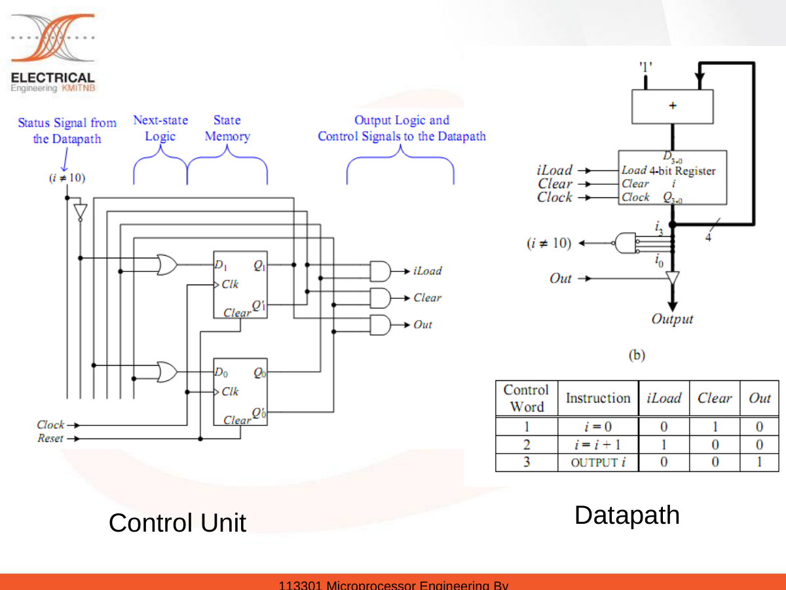
📌 อะไร (What):
สไลด์ที่ 21: สาระสำคัญเรื่อง 04. Micro3.pdf — วงจรลอจิกแบบลำดับ (Sequential Logic), Flip-Flops & Counters (เนื้อหาหลัก: 113301 Microprocessor Engineering By Control Unit Datapath)
❓ ทำไม (Why):
การเข้าใจเนื้อหาในสไลด์ที่ 21 ของไฟล์ Micro3.pdf มีความสำคัญอย่างยิ่งในการสอบวิชา Embedded System เพื่อวิเคราะห์สถาปัตยกรรมและนำไปใช้ออกแบบฮาร์ดแวร์/เฟิร์มแวร์จริง
⚙️ ยังไง (How):
การทำงานในสไลด์ที่ 21 ประมวลผลผ่านสัญญาณดิจิทัล สัญญาณนาฬิกา (Clock) และโครงสร้างรีจิสเตอร์/บัสภายในระบบอย่างเป็นลำดับขั้นตอน
สไลด์ที่ 22 จาก 22
Slide #22
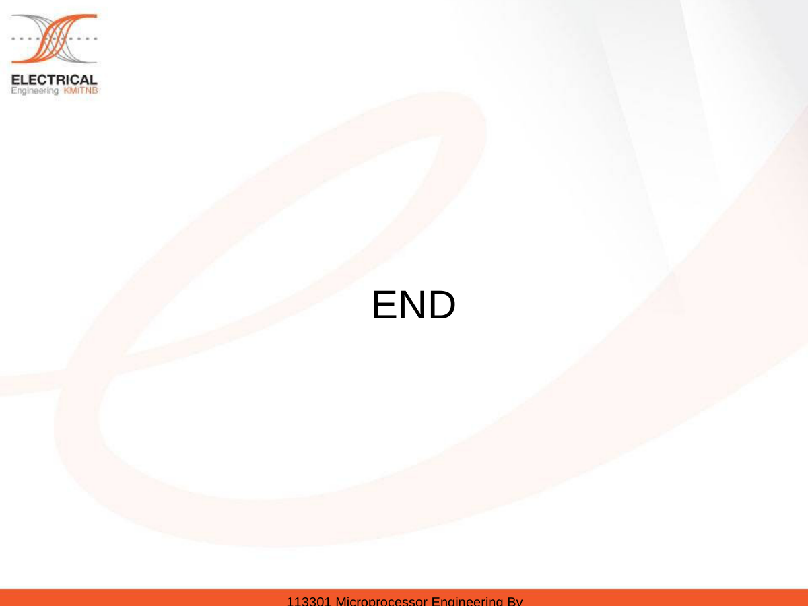
📌 อะไร (What):
สไลด์ที่ 22: สาระสำคัญเรื่อง 04. Micro3.pdf — วงจรลอจิกแบบลำดับ (Sequential Logic), Flip-Flops & Counters (เนื้อหาหลัก: 113301 Microprocessor Engineering By END)
❓ ทำไม (Why):
การเข้าใจเนื้อหาในสไลด์ที่ 22 ของไฟล์ Micro3.pdf มีความสำคัญอย่างยิ่งในการสอบวิชา Embedded System เพื่อวิเคราะห์สถาปัตยกรรมและนำไปใช้ออกแบบฮาร์ดแวร์/เฟิร์มแวร์จริง
⚙️ ยังไง (How):
การทำงานในสไลด์ที่ 22 ประมวลผลผ่านสัญญาณดิจิทัล สัญญาณนาฬิกา (Clock) และโครงสร้างรีจิสเตอร์/บัสภายในระบบอย่างเป็นลำดับขั้นตอน
📝 แบบทดสอบวัดความเข้าใจหลังเรียนประจำไฟล์ที่ 4 (Micro3.pdf)
📊 สรุปผลคะแนนปัจจุบัน: 0 / 3 ข้อ (กรุณาคลิกเลือกคำตอบในแต่ละข้อ)
ข้อที่ 1: สาระสำคัญและวัตถุประสงค์หลักของบทเรียนในไฟล์ Micro3.pdf คือเรื่องอะไร?
ก. การเรียนรู้หลักการ สถาปัตยกรรม และการประยุกต์ใช้งานใน Micro3.pdf
ข. การประมวลผลเครือข่ายอินเทอร์เน็ตความเร็วสูงเท่านั้น
ข้อที่ 2: เหตุใดการวิเคราะห์ระดับบิตและสัญญาณ Clock จึงมีความสำคัญในการศึกษาวิชานี้?
ก. เพื่อให้เข้าใจจังหวะการทำงานและการไหลของข้อมูลฮาร์ดแวร์ในระดับพินและรีจิสเตอร์
ข. สัญญาณ Clock ไม่มีผลต่อการบันทึกข้อมูลใน Flip-Flop💡 Flip-Flop: ฟลิปฟลอป: วงจรลอจิกแบบลำดับ (Sequential Circuit) ทำหน้าที่จำข้อมูลดิจิทัล 1 บิต ทำงานตามขอบสัญญาณ Clock
ข้อที่ 3: ข้อใดกล่าวถูกต้องเกี่ยวกับการเพิ่มประสิทธิภาพของระบบประมวลผลฝังตัว?
ก. การเลือกใช้สถาปัตยกรรมที่เหมาะสมร่วมกับการลดจำนวนเกตและไอซี ช่วยเพิ่มประสิทธิภาพและลดต้นทุน
ข. การเพิ่มจำนวนชิป IC บนบอร์ดให้ได้มากที่สุดโดยไม่สนต้นทุน
🔮 3D Interactive Flip-Flop Circuit Diagrams & Gate Architectures (วงจร 3D ลอจิกฟลิปฟลอปแต่ละประเภท)
เลือกประเภทฟลิปฟลอปที่ต้องการศึกษาเพื่อดูแผนผังวงจรเกตลอจิก 3D (3D Isometric Circuit Diagram) พร้อมทดลองป้อนสัญญาณอินพุต สังเกตการไหลของลอจิกและผลลัพธ์ $Q, Q'$ แบบมิติสมจริง:
D Flip-Flop (Data Latch/Register Unit)
Q(t+1) = D
📤 ผลลัพธ์สถานะ: Q = 0 | Q' = 1